Latest News & Updates
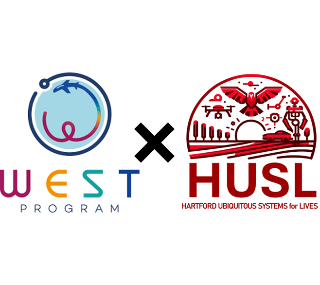
November 2025
We’re proud to announce that HUSL will host the prestigious WEST (Work, English Study, Travel) program — jointly sponsored by the U.S. Department of State (US DoS) and the Korea Ministry of Education! 🇺🇸🇰🇷
The WEST program provides top South Korean university students and young professionals the opportunity to intern, study English, and experience life in the United States through cultural immersion and professional exchange. ✈️📚
This prestigious program — in the same category as the Fulbright Scholarship — holds special meaning for us, as HUSL Director Dr. DBK is an alumnus of the WEST program himself! 🌟
Starting Spring 2026, HUSL will proudly host WEST interns, giving our members the chance to collaborate with talented international students and embrace a truly global research culture. 🌍✨
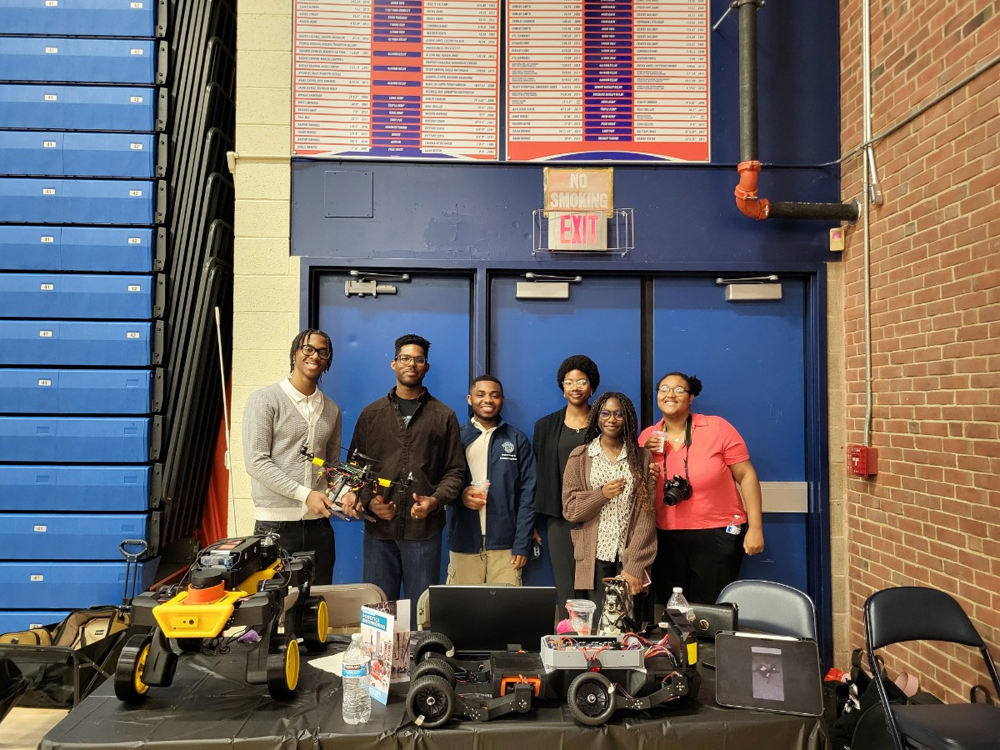
October 2025
HUSL and ARK (led by Prof. Sohn’s group) successfully promoted UHart’s Robotics Program at both the UHart Open House and the Bloomfield STEM Expo! 💡✨
Visitors got to see our robots in action and learn about the exciting world of robotics at UHart. The team even showcased our newly built large hexacopter — definitely a showstopper! 🚁🔥
Huge thanks to everyone who stopped by and supported our growing robotics community! 🙌
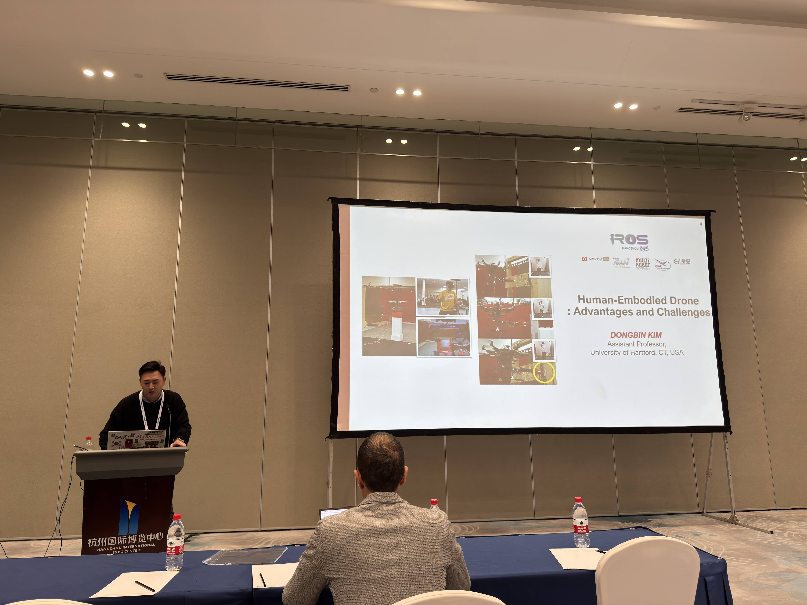
October 2025
HUSL Director Dr. DBK delivered a keynote presentation at the prestigious IEEE International Conference on Intelligent Robots and Systems (IROS) workshop on Aerial Physical Interactions! 🚁✨
He was invited alongside some of the pioneers — the “godfathers and godmothers” of aerial manipulation — a true honor for HUSL and UHart Robotics. 🙌
This incredible experience not only validated HUSL’s research direction but also strengthened our commitment to advancing aerial robotics worldwide. 🌍💡
Next mission: IROS 2026, Pittsburgh, PA — with our latest innovations ready to take flight! 🚀
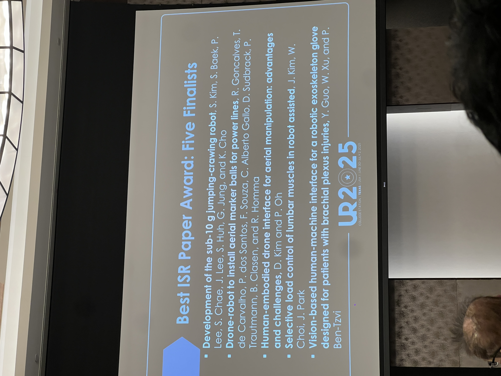
October 2025
Huge congratulations to HUSL Director, Dr. DBK, whose recent journal article —
“Human-Embodied Drone Interface for Aerial Manipulation: Advantages and Challenges” — was selected as a Best Paper Finalist by the Journal of Intelligent Service Robotics (ISR)! 🎉✨
This groundbreaking research introduces a novel dexterous aerial manipulation system using a human-embodied control interface, supported by the U.S. Department of Transportation (US-DoT) for bridge inspection and maintenance. 🌉🚁
A proud moment for HUSL and UHart Robotics — pushing the limits of human-robot collaboration! 💪
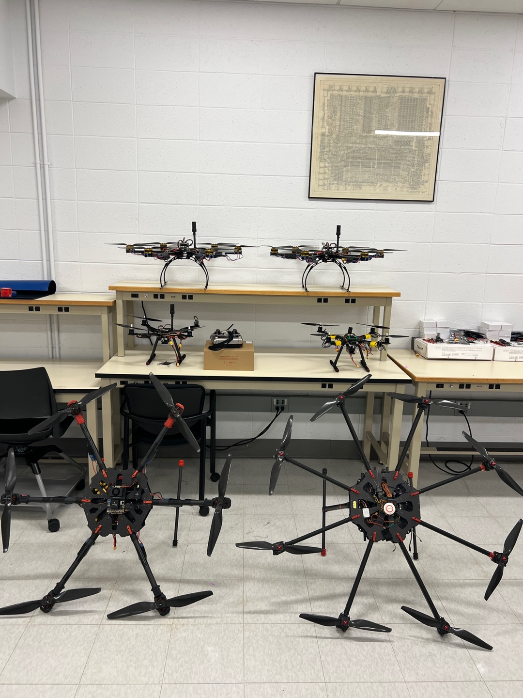
October 2025
After months of hard work and testing, our fleet of small, medium, and large drones is officially ready to fly! 💪✨
Each drone is designed to serve a unique purpose — from precision mapping to aerial delivery — all contributing to research that will bring real value to society. 🌍🤖
These drones will soon be deployed across current and future collaborations as HUSL continues to push the boundaries of robotics and innovation!
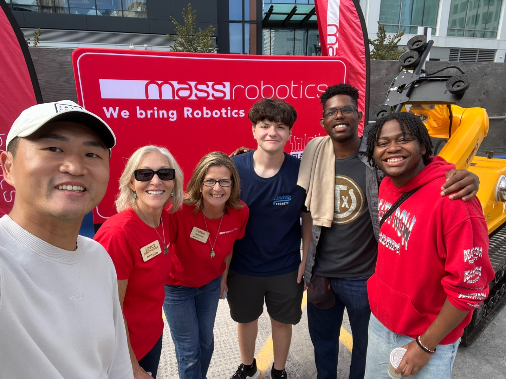
September 2025
Dr. DBK and HUSLers Jacob, Yohan, and Sterling visited RoboBoston, hosted by MassRobotics, to
explore cutting-edge robotics innovation in action! From startup demos to hands-on exhibits, it
was an inspiring day of tech, teamwork, and future vision. We’re even more excited now —
HUSL will have our own booth at RoboBoston! Huge thanks to MassRobotics Co-Founder, Joyce Sidopoulous,
for the warm welcome and support!
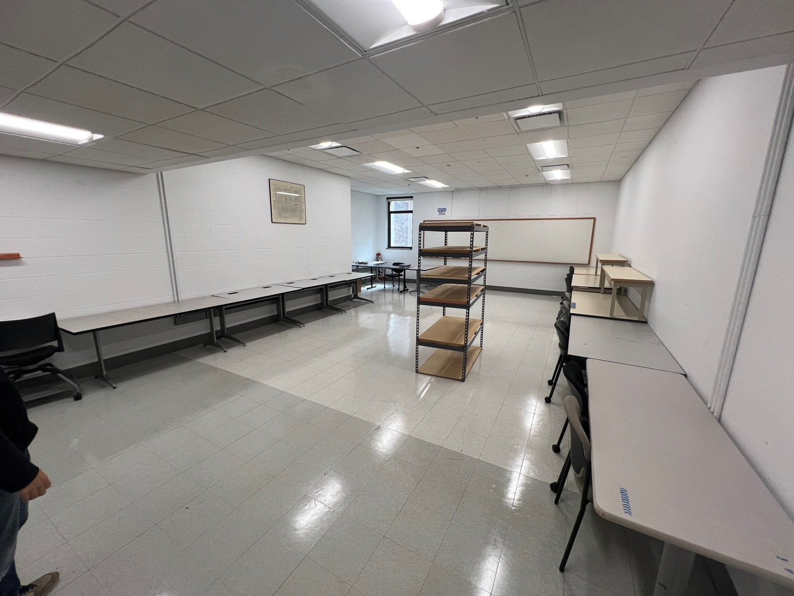
September 2025
We’re excited to announce that HUSL now has a dedicated lab office space in Room D313!
This space will be used by HUSLers to study, collaborate, and perform initial robot system development and
testing—before moving on to full-scale validation at the Motion Capture Arena or outdoors.
The office is still in preparation.
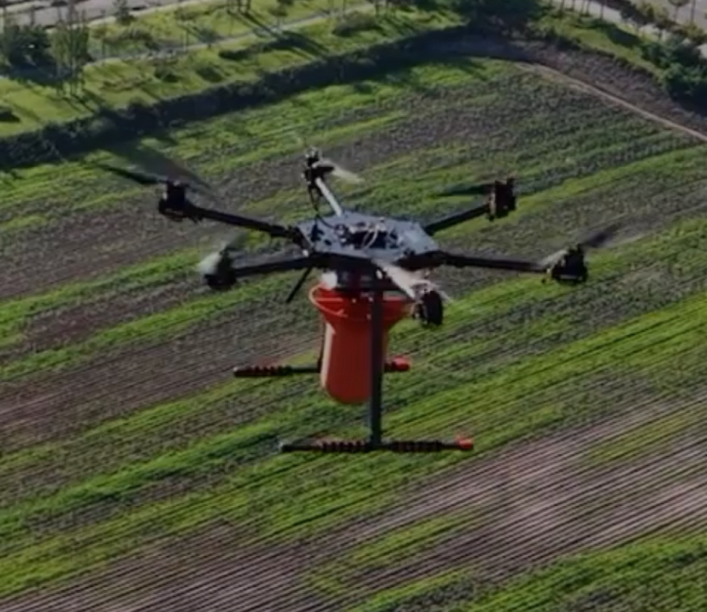
August 2025
Dr. DBK recently tested HUSL’s collaborative project on a smart air-to-ground system in South Korea—and the results were a success!
The drone system was able to deliver the payload to the target with impressive precision, marking a major milestone
in our international collaboration.
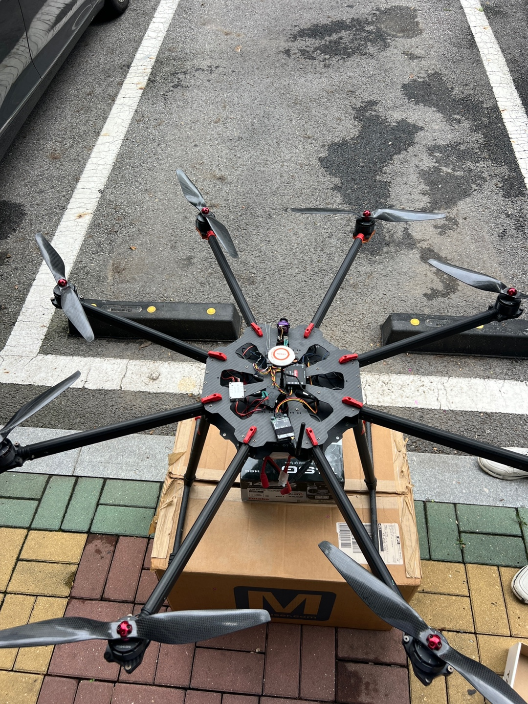
August 2025
Novatek, a robotics company based in South Korea, has donated a heavy-payload-carrying X8 platform to HUSL. This powerful
X8 system will significantly support our ongoing research in aerial robotics for warehouse monitoring, enabling us to
push the boundaries of what our drones can do. A hugh thank you to Novatek for their support and belief in our mission.
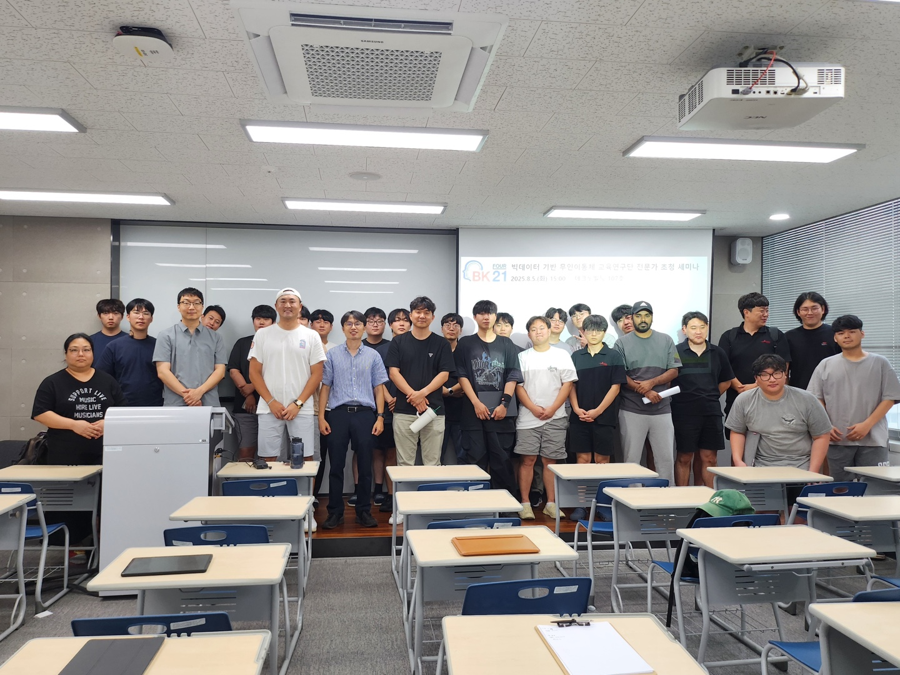
August 2025
Dr. DBK recently gave multiple seminars across South Korea, presenting HUSL's cutting-edge work on aerial manipulation
From top universities to goverment agencies, he showcased our latest innovations aand fostered global conversations
around the future of robotics and real-world applications.
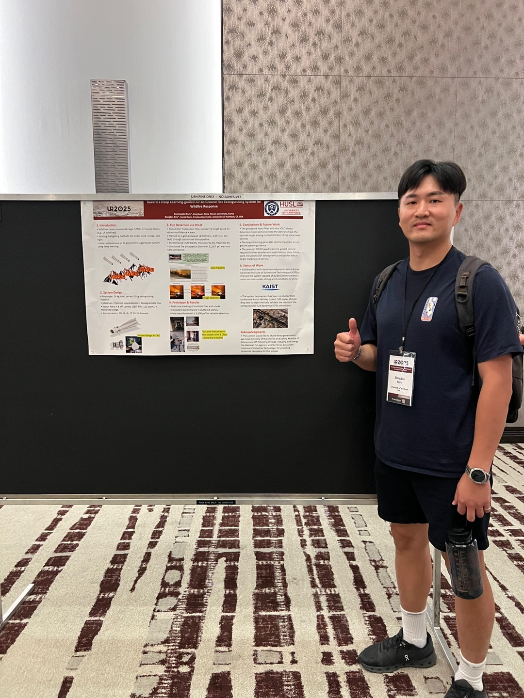
July 2025
HUSL made its poster presentation debut at the IEEE Ubiquitous Robots (UR) Conference in College Station, TX!
The presented work highlights a smart air-to-ground system for wildfire response, developed in collaboration
with Yonsei University (South Korea)-a powerful example of global teamwork addressing real-world challenges.
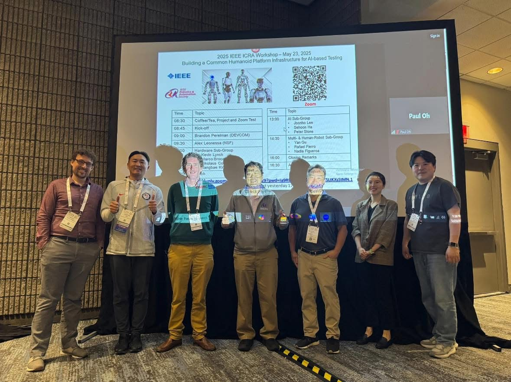
May 2025
Prof. DBK organized a workshop titled "Building a Common Humanoid Platform Infrastructure for AI-based Testing" at the
prestigious IEEE International Conference on Robotics nd Automation (ICRA) in Atlanta, GA. The workshop brought together global
experts to discuss the future of humanoid robotics, shared platforms and AI-driven evaluation
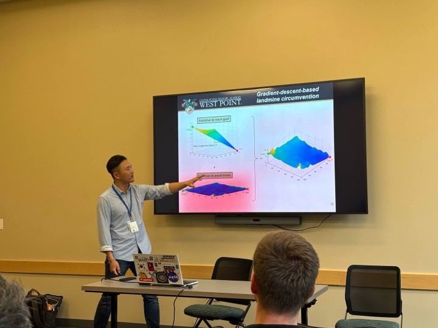
May 2025
HUSL prsented its first research paper at the 2025 IEEE International Conference on Unmanned Aircraft Systems (ICUAS) in Charlotte, NC.
The paper showcaseds our collaborative work with the United States Military Academy at West Point, focusing on landmine localization, mapping
and avoidance - a step toward making robotics serve critical humanitarian missions.
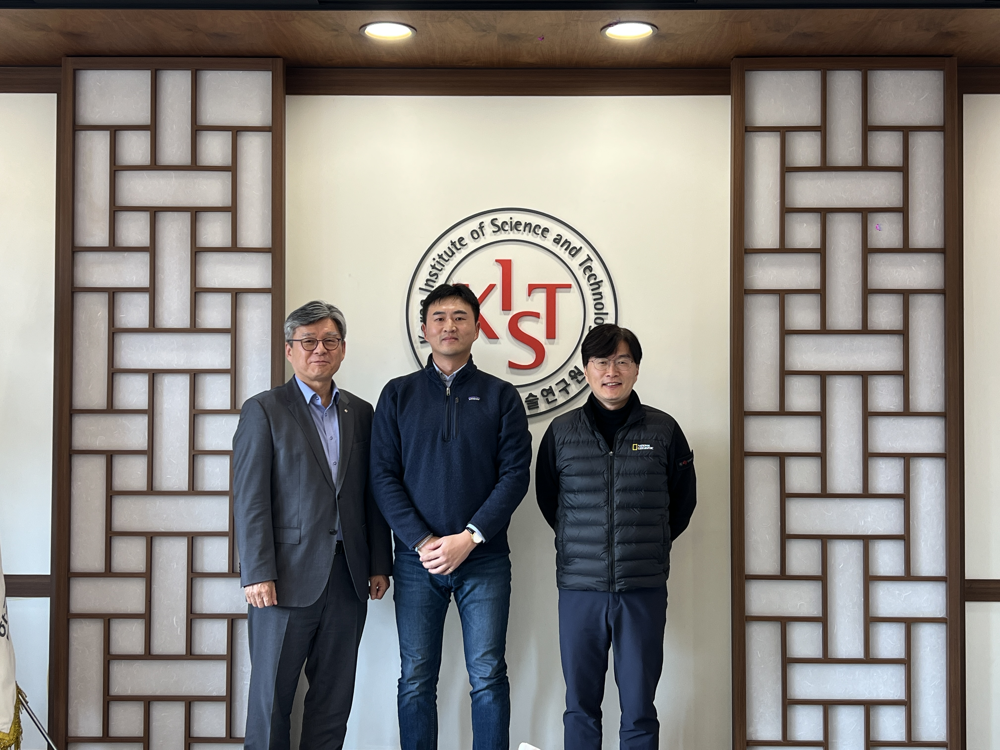
December 2024
Prof. DBK visited the prestigious Korea Institute of Science and Technology (KIST), where he was warmly welcomed by KIST President
Dr. Sangrok Oh. During the visit, Dr. Oh sred valuable insights and encouragement on the direction of HUSL, strengthening out commitment
to global collaboration and innovation in robotics.